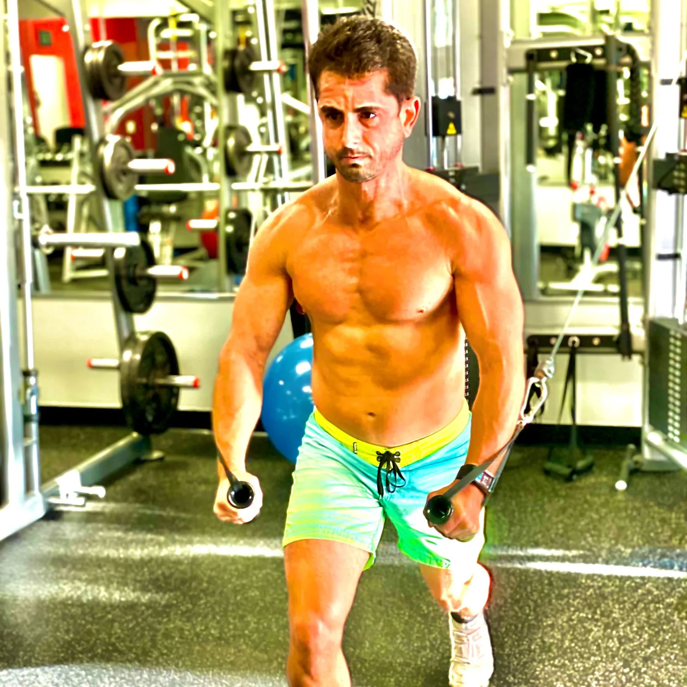
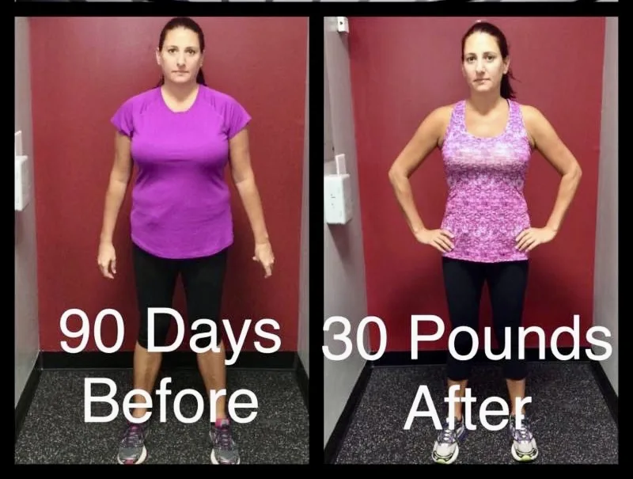
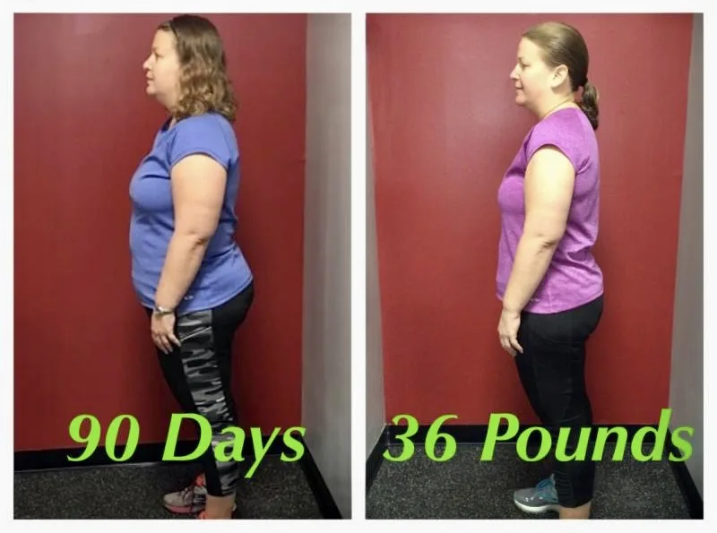

Founder of GFC Xtreme Fitness. I coach people to become metabolic dysfunction free with a science-driven approach: every tool that works, used in the right order, until the habits are yours.
Take the 2-minute Metabolic Score

Two GFC Xtreme clients after 90 days of coached strength training and nutrition, shared with their permission.


Individual results. These are not typical and not guaranteed. Results depend on starting point, adherence, medication and individual biology.